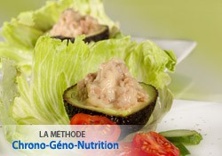

◀ ⎙
Avocats au thon
Pour 4 Personnes,
Temps de préparation : ,
Temps de cuisson : ,

Ingrédients
- 1 grande boite de thon au naturel
- 1 citron
- 3 échalotes
- 1 bouquet de persil
- Huile d'olive
Préparation
- Marche à suivre :
- Épluchez et hachez les échalotes.
- Hachez également le persil.
- Égouttez le thon et dans un saladier, émiettez-le, versez le jus de citron, ajoutez l'échalote hachée, le persil et une cuillerée d'huile d'olive.
- Réservez au frais.
- 15 minutes avant de servir, coupez les avocats en deux, ôtez les noyaux et garnissez les avocats avec la préparation.
- Servez bien frais
Remarques